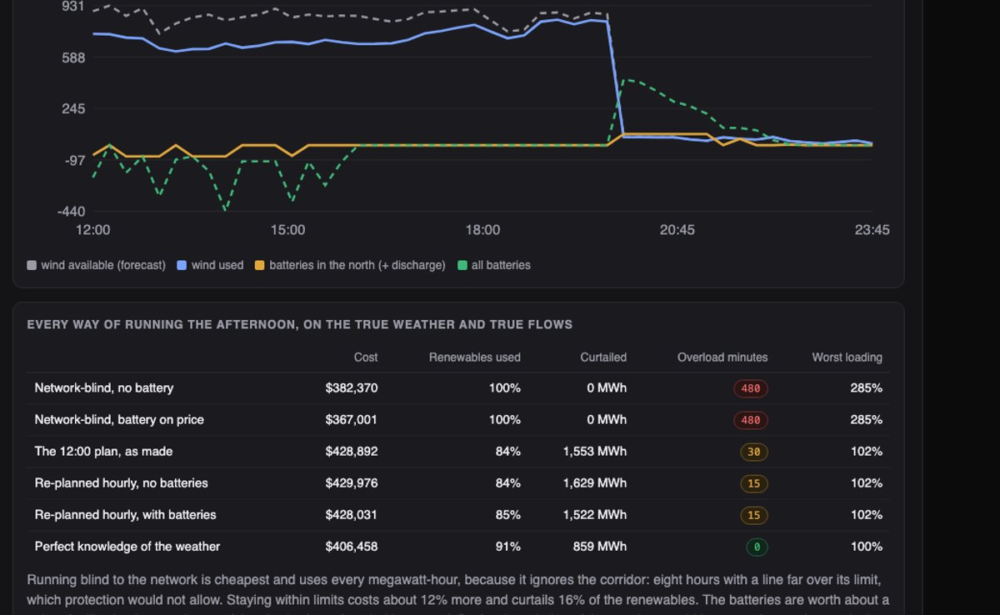
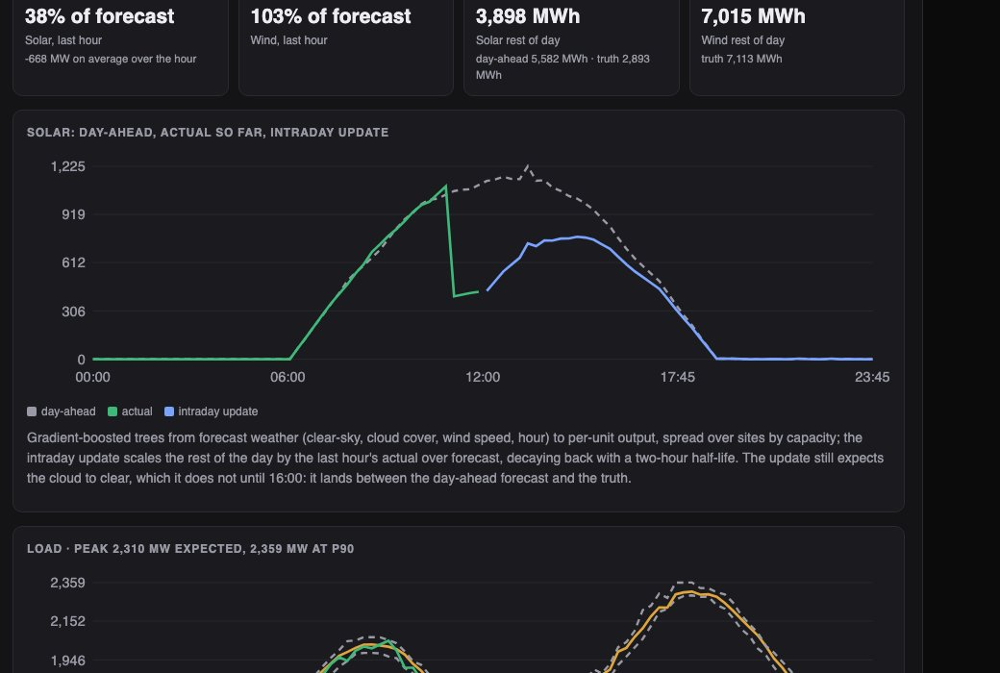
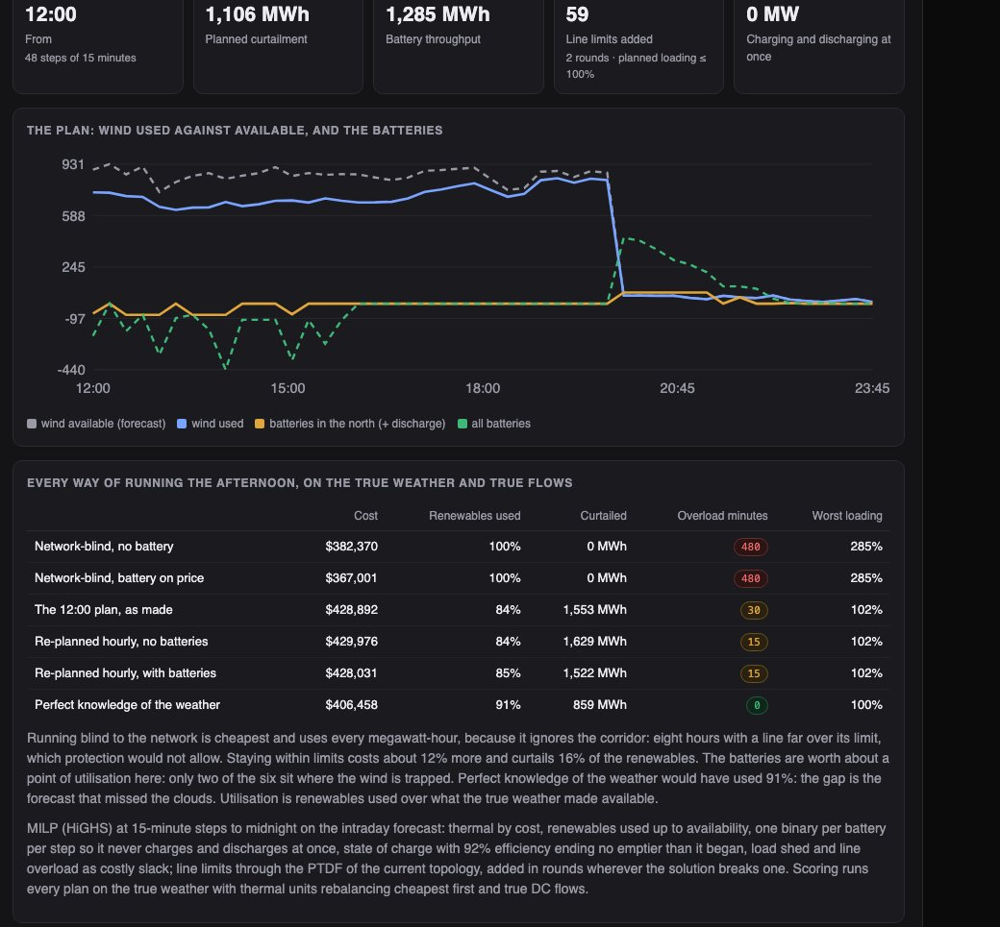

Python · DC power flow · MILP · 2026-10
What Does It Cost to Keep the Lines Within Their Limits?
A digital twin of an invented 118-bus grid on a windy day that turns cloudy: a forecast that missed the clouds (solar at 38% of forecast), a line trip that puts a corridor at 241%, an N-1 scan, and battery and curtailment dispatch by MILP, every way of running the afternoon scored on the true weather (overload minutes 480 → 30, at 12% more cost).

Built from a written blueprint as one vertical slice. The grid is simulated: a synthetic 118-bus network (not the IEEE case), its assets, sixty days of weather, telemetry and prices come from a generator in the repository, and the twin that scores every plan is that generator, which makes the results the best a real twin could reach. DC power flow only. No language model is used. Not built: AC power flow, security-constrained dispatch, unit commitment, real weather or market feeds, Kafka, Terraform, single sign-on.
01 — The problem
A grid with a lot of wind and solar is run on forecasts that are sometimes badly wrong, through lines that sometimes trip. When the wind is strong and the line that carries it out of the north is lost, something has to give: the wind is curtailed, a battery soaks it up, or a line runs over its limit until protection takes it out. The question is not whether to spend money but how little, and whether the batteries and the forecasts are worth what they cost. Can a twin of the network forecast, find the overload, plan the batteries and curtailment around it, and say honestly what each of those is worth?
Blueprint 15 of fifteen in a third build book, built as its demo scenario end to end.
02 — What I built
A Python service on PostgreSQL with a background worker and a web page, started by one docker compose up.
- A synthetic 118-bus network in four regions with thermal, solar, wind and batteries, and line limits set so the intact grid is secure.
- DC power flow through a PTDF per topology, with connectivity checked so an islanding outage is refused, not crashed.
- Forecasts of solar, wind and load from forecast weather, scored against persistence and the physical formulas, with an intraday update from telemetry.
- N-1 from the current topology, counting only new overloads.
- A dispatch MILP to midnight with the line limits enforced, and scoring of every strategy on the true weather.
03 — How it was built
- 01
A network that is secure until it is not
118 buses on a 100 km square in four regions, each joined to its nearest neighbours and then meshed to 180 lines, fourteen of them radial. Thermal units in the metro and east, 1.3 GW of solar in the west, 0.9 GW of wind in the north, six four-hour batteries. Line limits sit 15–45% above the most each line carried in sixty days of ordinary operation, so the intact grid never overloads; the demo's outage is the line whose loss most overloads the wind export corridor, and with it gone line 153 carries 241% of its limit.
for ln in lines: ln["cap"] = max(60.0, peak[ln["idx"]] * r.uniform(1.15, 1.45)) - 02
Physics as one matrix per topology
DC power flow: the susceptance matrix with the slack bus removed, inverted once per topology into a PTDF, so every flow afterwards is one matrix-vector product and the dispatch can write line limits as linear constraints. Before any solve the network's connectivity is checked; opening a radial line is refused with the number of buses it would cut off (72 in the demo), and the N-1 scan reports islanding as a result rather than a crash.
Xr = np.linalg.inv(B[1:, 1:]) PTDF = (b[:, None] * A) @ X # lines x buses, slack at bus 1 - 03
A forecast that missed the clouds, and an update that half-catches it
Gradient-boosted trees from forecast weather to solar and wind beat persistence by a wide margin; wind only matches the power curve, because that is how the generator makes wind, and the page says so. At noon, after an hour of a cloud bank no forecast saw, solar is at 38% of the day-ahead forecast. The intraday update scales the afternoon by that ratio, decaying back over two hours: 5,582 MWh becomes 3,898, against a truth of 2,893, because the cloud stays until 16:00.
total, ratio = nowcast(day_ahead_rest, actual_last_hour, forecast_last_hour, steps_ahead) - 04
Batteries and curtailment as a MILP
From noon to midnight at 15-minute steps: thermal units by cost, renewables up to availability, each battery with one binary per step so it can never charge and discharge at once (an LP would happily burn surplus through efficiency losses and call it utilisation), state of charge ending where the day began, battery wear at $8/MWh, and line limits through the post-outage PTDF, added in rounds wherever the solution breaks one. In the demo it solves in two rounds with 59 line limits, planning 1,106 MWh of curtailment and 1,285 MWh through the batteries.
add([(c_bt, 1.0), (z_bt, -P_b)], -inf, 0) # charge only when z = 1 add([(d_bt, 1.0), (z_bt, P_b)], -inf, P_b) # discharge only when z = 0 - 05
Scored on what the weather really did
Every way of running the afternoon goes through the true weather and the true flows. Ignoring the network is cheapest ($382,370) and uses every megawatt-hour, with eight hours of a line at up to 285%. The noon plan costs 12% more, uses 84% of the renewables and leaves 30 minutes within 102% of a limit. Re-planning hourly with batteries reaches 85%; without batteries 84%; perfect knowledge of the weather 91% with no overloads. On three other networks re-planning hourly did not beat the noon plan, and the batteries were worth 0–2 points. The largest gain on the table is knowing the weather.
res["perfect_knowledge"] = score(w, truth, plan_on_truth["battery"], out, ...)
04 — Results
The demo. Solar after an hour of cloud: the day-ahead forecast, what telemetry showed, and the intraday update:

The plan and every alternative on the true weather:

On three other simulated networks:
| System | Baseline | |
|---|---|---|
| Solar forecast error (MW) | 15–20 | 60–74 persistence |
| Wind forecast error (MW) | 58–78 | 76–95 power curve |
| Overload minutes, afternoon | 15–165, within 110% | 480–645 network-blind, to 449% |
| Cost of staying within limits | 14–39% more | network-blind |
| Batteries | 0–2 points | – |
| Perfect knowledge of the weather | 3–6 points more | – |
Network-blind operation always wins on cost because it ignores the corridor; the page presents the extra cost as the price of staying within the limits. Re-planning hourly did not help, because each re-plan assumes the cloud is about to clear. A battery scheduled on price alone made congestion worse on one network.
Honest limits. DC flow only; no security-constrained dispatch; the twin that scores is the generator; the networks and the weather are synthetic.
Checks. 11 tests, including: the PTDF matches a direct angle solve and flows balance at every bus, an islanding outage is refused, the intact grid stays within limits across the history and the demo outage overloads the corridor, N-1 counts only new overloads, the forecasts beat persistence and the cloud is a real miss, the MILP keeps every line and state of charge within bounds, never charges and discharges at once and is never worse with batteries than without, and one operator cannot see another's grid.
05 — What I'd do next
- A cloud nowcast from satellite-like imagery instead of a ratio, which is where the largest gain on the table sits.
- Security-constrained dispatch for the worst few N-1 cases, and the cost of each.
- An AC power-flow adapter to check the DC plan's voltages.